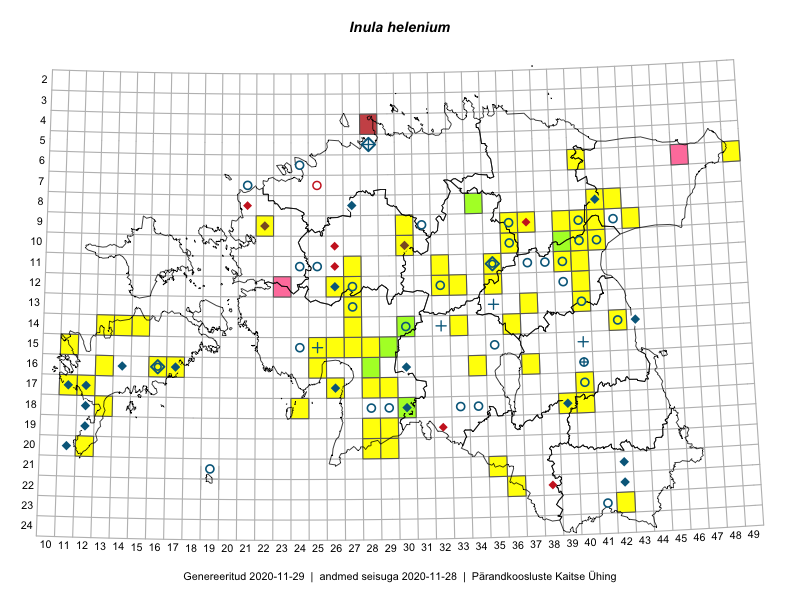

Inula helenium
Uuendatud: 2016-12-02
Kaardile koondatud taksonid: Inula helenium L.

Kaart põhineb 100 kirjel, neist vaatlusi 98 ja eksemplare 2. Taksonit on leitud 52 ruudust.
Kuvatud viited 20 esimesele andmebaasikirjele, ülejäänud PlutoFis
- Peedu Saar, Liina Oja: 2015-05-21: 16-25: ala
- Peedu Saar, Liina Oja: 2015-05-21: 16-25: GPS punkt
- Toomas Kukk, Raivo Kalle: 2015-05-12: 11-40: ala
- Peedu Saar, Thea Kull: 2015-06-19: 17-40: GPS punkt
- Peedu Saar, Ott Luuk: 2015-07-27: 11-35: GPS punkt
- Peedu Saar, Ott Luuk: 2015-06-21: 14-42: ala
- Ott Luuk, Peedu Saar: 2015-07-27: 11-35: ala
- Toomas Kukk, Raivo Kalle: 2015-05-12: 11-40: GPS punkt
- Malle Leht: 2015-07-25: 18-40: ala
- Peedu Saar: 2015-08-04: 14-36: GPS punkt
- Peedu Saar: 2015-08-04: 14-36: ala
- Peedu Saar: 2015-08-10: 13-40: GPS punkt
- Peedu Saar: 2015-08-10: 13-40: ala
- Peedu Saar, Eerik Leibak: 2015-08-16: 12-40: GPS punkt
- Peedu Saar, Eerik Leibak: 2015-08-16: 12-40: ala
- Peedu Saar, Eerik Leibak: 2015-08-18: 11-39: GPS punkt
- Peedu Saar, Eerik Leibak: 2015-08-18: 11-39: ala
- Thea Kull, Peedu Saar: 2015-06-19: 17-40: ala
- Jana-Maria Habicht, Ester Valdvee: 2015-08-15: 08-34: ala
- Jana-Maria Habicht, Ester Valdvee: 2015-08-15: 09-36: ala